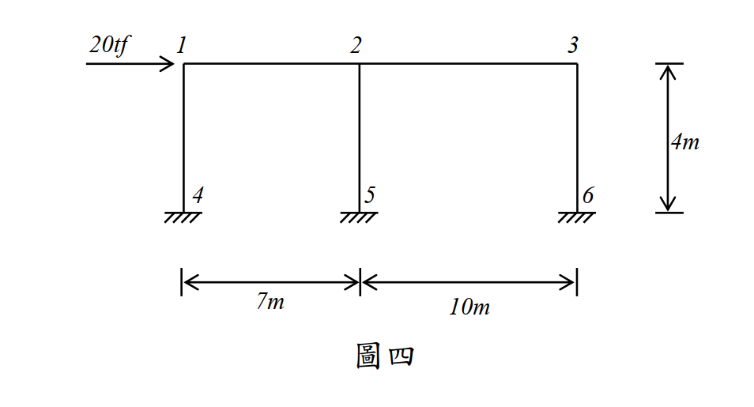
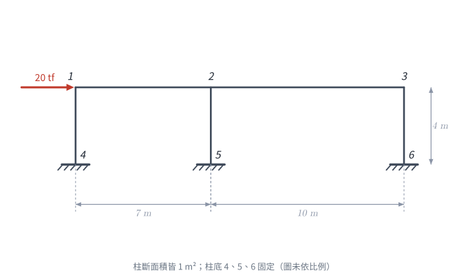
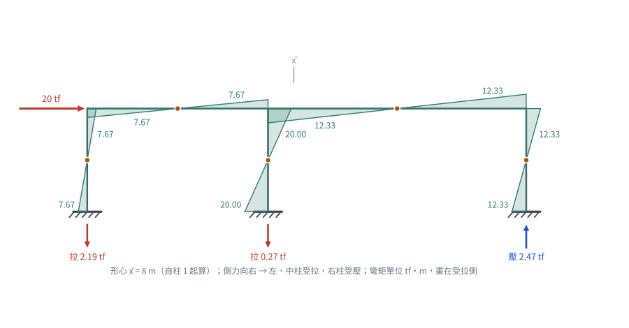

📄 題目正本：考卷原文・附圖・判讀清單（已確認）
SD-2015-4 題目正本
本檔只記錄考卷上寫了什麼、圖上畫了什麼，不含任何解法。解析見同資料夾
SD-2015-4.md。
判讀清單經使用者確認前，狀態為「待確認」；確認後本檔原則上不再修改（改動須回考卷原圖並記 log）。
| 項目 | 內容 |
|---|---|
| 考卷 | raw/exams/SD-2015_結構動力分析與耐震設計.pdf，第 2 頁（背面），第四題 |
| 考年 | 2015（民國104年）專技高考結構工程技師「結構動力分析與耐震設計」 |
| 配分 | 25 分 |
| 附圖 | SD-2015-4-fig-1.png（舊擷取，完整、無游標，未重擷取） |
| 判讀狀態 | 已確認（2026-11-16，使用者授權依 Claude 建議。原轉錄：2026-11-16 轉錄；PyMuPDF 110 dpi 整頁＋500 dpi 局部放大，PDF 文字層核對原文；盲讀於開啟解析前完成） |
1. 考卷原文（逐字）
四、構架如圖四，以簡易懸臂梁法（Approximation of cantilever method）計算每一梁與柱之端點彎矩。令柱之斷面積皆 1 m²。（25 分）
2. 考卷給的公式、附表與參數
- 考卷沒有給參考公式。
- 給定（圖上）：單層兩跨構架，跨距 7 m、10 m，柱高 4 m；水平力 20 tf 作用於節點 1、向右；柱底 4、5、6 固定；題文：三柱斷面積皆 1 m²。
- 考卷沒有給：構件 $EI$、梁斷面、垂直載重；懸臂梁法的假設（反曲點位置等）由考生自行敘明。
- 卷首注意事項：㈠可以使用電子計算器。㈡不必抄題，作答時請將試題題號及答案依照順序寫在試卷上，於本試題上作答者，不予計分。考試時間：2 小時。
3. 附圖

證據圖 SD-2015-4-fig-1.png
圖面文字照錄：20tf、1、2、3、4、5、6、4m、7m、10m、圖四
4. 判讀清單
| # | 項目 | 判讀 | 圖上／題文依據 | 把握 |
|---|---|---|---|---|
| 1 | 懸臂梁法假設 | 考卷只寫方法名稱；定案採教科書標準假設：梁、柱反曲點在中點，柱軸力與柱至柱形心軸距離成正比（柱面積相同，形心由三柱位置求） | 題文「簡易懸臂梁法」「柱之斷面積皆 1 m²」 | 確定（解讀） |
| 2 | 柱底 | 三柱皆固定 | 500 dpi：柱底橫線＋斜線 | 確定 |
| 3 | 跨距 | 1–2 為 7 m、2–3 為 10 m（尺寸線端點對齊柱中心線；圖未依比例） | 500 dpi：延伸線與柱線同 x | 確定 |
| 4 | 柱高 | 4 m（尺寸線上端對齊梁線、下端對齊柱底） | 500 dpi | 確定 |
| 5 | 側力 | 20 tf，水平向右，作用於節點 1（梁高度） | 圖上箭頭 | 確定 |
| 6 | 節點編號 | 梁：1（左）、2（中）、3（右）；柱底：4、5、6 對應其下 | 圖面文字 | 確定 |
| 7 | 所求 | 每一梁（1-2、2-3）與每一柱（1-4、2-5、3-6）兩端彎矩 | 題文 | 確定 |
| 8 | 考卷沒有給 | $EI$、垂直載重 | 題文 | 確定 |
轉錄：2026-11-16（SD-U3-1 題目正本推廣・組 U3-1-G1）
確認：2026-11-16 使用者授權依 Claude 建議確認（SD-U3-1 題目正本推廣・組 U3-1-G1，關卡一）
考題編號：SD-2015-4
主分類： SD-U3-1 結構耐震設計（含RC結構與鋼結構）
副分類： （無）
分析方法： 概念題（含計算）——簡易懸臂梁法（Approximate Cantilever Method）
標籤： 懸臂梁法 側力分析 端點彎矩 近似法 中性軸 柱軸力 梁剪力 彎矩圖 靜不定構架 一層兩跨 靜力近似法
1. 題目（考卷原文見題目正本）
考卷原文、公式／附表、附圖與判讀清單（已確認）見
SD-2015-4-problem.md。本節只列解題時最容易讀錯的地方與本解使用的記號；題意以題目正本為準。

重繪自考卷附圖，依題目正本判讀清單；本圖攔下的判讀錯誤：跨距 7 m 在左、10 m 在右，三柱底皆固定。
常見誤讀
| 項目 | 正確判讀 | 常見誤讀 |
|---|---|---|
| 懸臂梁法假設 | 梁、柱反曲點在中點；柱軸力與柱至形心距離成正比（柱面積皆 1 m²）（判讀 #1） | 用門架法（內柱剪力為外柱 2 倍） |
| 跨距 | 1–2 為 7 m、2–3 為 10 m（判讀 #3） | 左右對調 |
| 柱底 | 三柱皆固定（判讀 #2） | — |
| 側力 | 20 tf 向右作用於節點 1（判讀 #5） | — |
本解記號： $\bar x$ 為柱斷面形心位置（自柱 1-4 起算）；$d_i=x_i-\bar x$。
2. 考題核心精神與出題者意圖 (Core Concepts & Examiner's Intent)
核心觀念：
- 懸臂梁法把整體構架類比為「懸臂梁截面」，各柱視為截面纖維，用彎曲應力分布原理求柱軸力
- 從柱軸力→梁剪力→梁端彎矩→柱端彎矩→柱剪力，形成一個自洽的解析流程
- 本題測驗整個懸臂梁法的計算流程是否熟練
出題者意圖：
- 驗證考生能否正確計算中性軸（重心）位置
- 驗證考生能否由彎矩平衡推導柱端彎矩（非直接由剪力算，而是由梁端彎矩累加）
- 非對稱跨距（7m vs 10m）增加計算複雜度，測驗對分配邏輯的理解
關鍵陷阱：
- 誤用門架法（Portal Method）的等剪力假設：懸臂梁法的柱剪力不相等
- 忘記求中性軸（誤設中性軸在中柱）
- 梁端彎矩應從柱軸力→節點垂直平衡→梁剪力→梁端彎矩，步驟不可跳過
3. 解題戰略地圖與陷阱分析 (Strategic Roadmap & Trap Analysis)
懸臂梁法五步驟：
- 求柱群中性軸位置（所有柱面積加權重心）
- 由傾覆力矩平衡，求各柱軸力 $N_i$（正比於柱距中性軸距離）
- 由節點垂直平衡，求各梁垂直剪力 $V_\text{beam}$
- 由梁剪力 × L/2 求梁端彎矩；由節點彎矩平衡求柱端彎矩
- 由柱端彎矩求柱剪力，驗算 ΣV = P
關鍵陷阱：
| # | 陷阱 | 應對 |
|---|---|---|
| 1 | 中性軸誤設 | 中性軸 = Σ(A_i×x_i)/ΣA_i，非幾何中點 |
| 2 | 柱軸力方向 | P 向右 → 傾覆力矩順時針 → 左柱受拉、右柱受壓（懸臂梁類比：受力側為拉側，背風側為壓側）；本庫舊解曾寫反 |
| 3 | 切割高度 | 固定端柱：在中高（h/2=2m）切割，此處傾覆力矩 = P×(h/2) |
| 4 | 梁端彎矩對稱性 | 梁端彎矩兩端相同大小（反曲點在跨中） |
| 5 | 柱端彎矩計算 | 中柱需加總左右兩梁的梁端彎矩 |
3.5 變數層次分析 (Variable Hierarchy Analysis)
最終目標
求各梁（beam 12、beam 23）與各柱（col 1、col 2、col 3）的端點彎矩。
本題關鍵公式（依計算順序）
$$\text{Step 1:}\quad \bar{x} = \frac{\sum A_i x_i}{\sum A_i}$$
$$\text{Step 2:}\quad N_i = k \cdot A_i \cdot d_i, \quad k = \frac{P \cdot h/2}{\sum A_i d_i^2}$$
$$\text{Step 3 (梁剪力):}\quad \sum F_y = 0 \text{ at each joint} \Rightarrow V_\text{beam}$$
$$\text{Step 4 (梁端彎矩):}\quad M_\text{beam,end} = V_\text{beam} \cdot \frac{L}{2}$$
$$\text{Step 5 (柱端彎矩):}\quad M_\text{col,top} = \sum M_\text{beam,ends at joint}$$
$$\text{Step 6 (柱剪力):}\quad V_\text{col} = \frac{2 M_\text{col,top}}{h} \quad \text{（反曲點在柱中高）}$$
L1：題目直接給定
| 符號 | 數值 | 說明 |
|---|---|---|
| P | 20 tf | 側向荷載，向右 |
| L₁₂ | 7 m | 左跨跨距 |
| L₂₃ | 10 m | 右跨跨距 |
| h | 4 m | 層高 |
| A_i | 1 m²（所有柱） | 柱斷面積 |
L2：需知識點推導
求中性軸
| 符號 | 公式／來源 | 卡關? |
|---|---|---|
| x̄ | Σ(A_i×x_i)/ΣA_i，從左柱起算 | |
| d_i | x_i − x̄（帶符號） |
求柱軸力
| 符號 | 公式／來源 | 卡關? |
|---|---|---|
| M_OT | P×(h/2)，傾覆力矩取切割面（中高）處 | |
| k | M_OT / Σ(A_i d_i²) | |
| N_i | k·A_i·d_i（正值為壓；側力向右時 d_i>0 的右柱受壓） |
求梁剪力→端點彎矩→柱端彎矩
| 符號 | 公式／來源 | 卡關? |
|---|---|---|
| V_beam | 由各節點 ΣFy=0 遞推 | |
| M_beam | V_beam × L/2 | |
| M_col_top | ΣM_beam 在該節點（邊柱單梁；中柱兩梁之和） | |
| M_col_base | = M_col_top（反曲點在柱中高） |
L3：深層知識（不懂就卡住）
| 知識點 | 說明 | 卡關? |
|---|---|---|
| 懸臂梁法 vs 門架法 | 門架法假設等剪力，懸臂梁法從軸力推導，柱剪力不等 | |
| 固定端柱反曲點位置 | 固定端→反曲點在柱高中點（h/2）；鉸接端→反曲點在端部 | |
| 柱軸力方向 | P 向右：上方自由體的順時針傾覆力矩須由柱軸力的逆時針力矩抵抗 → 右柱向上推（受壓）、左柱向下拉（受拉） | |
| 梁端反曲點假設 | 梁中點為零彎矩點（反曲點），此假設使 M = V × L/2 成立 |
4. 步驟化詳細計算過程 (Step-by-Step Detailed Calculation)
Step 1：求柱群中性軸（Neutral Axis）位置
設各柱 x 坐標（從左柱起算）：
| 柱 | 節點 | $x_i$（m） | $A_i$（m²） |
|---|---|---|---|
| Col-14（左柱） | 1–4 | 0 | 1 |
| Col-25（中柱） | 2–5 | 7 | 1 |
| Col-36（右柱） | 3–6 | 17 | 1 |
$$\bar{x} = \frac{1 \times 0 + 1 \times 7 + 1 \times 17}{1 + 1 + 1} = \frac{24}{3} = 8 \text{ m（從左柱起算）}$$
各柱距中性軸的距離（帶符號，右為正）：
$$d_1 = 0 - 8 = -8 \text{ m}, \quad d_2 = 7 - 8 = -1 \text{ m}, \quad d_3 = 17 - 8 = +9 \text{ m}$$
$$\sum A_i d_i^2 = 1 \times (-8)^2 + 1 \times (-1)^2 + 1 \times (9)^2 = 64 + 1 + 81 = 146 \text{ m}^4$$
Step 2：求各柱軸力（Cantilever Analogy）
在柱中高（h/2 = 2m）處切割，取上方自由體（包含節點 1、2、3 及各柱上半段）：
傾覆力矩（取中性軸為矩心，CCW 為正）：
$$M_\text{OT} = P \times \frac{h}{2} = 20 \times 2 = 40 \text{ tf}\cdot\text{m（順時針）}$$
柱軸力假設 $N_i = k \cdot A_i \cdot d_i$（正值為壓力，即柱向上推上方自由體），由力矩平衡（ΣM_z = 0，柱軸力的逆時針力矩抵抗順時針傾覆力矩）：
$$\sum N_i d_i = M_\text{OT} \Rightarrow k \sum A_i d_i^2 = 40$$
$$k = \frac{40}{146} = \frac{20}{73} \approx 0.274 \text{ tf/m}^3$$
各柱軸力：
| 柱 | $N_i = k \cdot A_i \cdot d_i$ | 數值 | 受力狀態 |
|---|---|---|---|
| 左柱（Col-14） | $\frac{20}{73} \times 1 \times (-8)$ | $-\dfrac{160}{73} \approx -2.19$ tf | 拉力 |
| 中柱（Col-25） | $\frac{20}{73} \times 1 \times (-1)$ | $-\dfrac{20}{73} \approx -0.27$ tf | 拉力 |
| 右柱（Col-36） | $\frac{20}{73} \times 1 \times (+9)$ | $+\dfrac{180}{73} \approx +2.47$ tf | 壓力 |
策略註解： P 向右時，構架像懸臂梁向右彎，受力側（左）伸長受拉、背風側（右）縮短受壓：左柱、中柱受拉，右柱受壓。方向可用 Step 6 的整體傾覆力矩驗算確認（右柱壓力對柱 1 底的力矩才能與 $P\times H$ 平衡）。
驗算： $N_1 + N_2 + N_3 = -\dfrac{160}{73} - \dfrac{20}{73} + \dfrac{180}{73} = 0$ ✓
Step 3：求各梁垂直剪力（由節點垂直平衡）
對於壓力柱：柱壓縮，向上推節點；對於拉力柱：柱拉伸，向下拉節點。
節點1（左端，只有一梁 Beam-12）：
左柱受拉，向下拉節點 1：
$$\uparrow \sum F_y = 0: \quad -\frac{160}{73} + V_\text{b12,L} = 0 \Rightarrow V_\text{b12,L} = +\frac{160}{73} \text{ tf（梁向上推節點1）}$$
Beam-12 剪力 $= \dfrac{160}{73}$ tf（梁在節點 1 端向上推節點、在節點 2 端向下拉節點）
節點2（中間節點，連接 Beam-12 右端與 Beam-23 左端）：
節點2受到的合力：
- 中柱（拉力）向下拉：$-\dfrac{20}{73}$ tf
- Beam-12 右端向下拉：$-\dfrac{160}{73}$ tf（與節點 1 的方向相反）
$$\sum F_y = 0: \quad -\frac{20}{73} - \frac{160}{73} + V_\text{b23,L} = 0 \Rightarrow V_\text{b23,L} = +\frac{180}{73} \text{ tf（Beam-23 向上推節點2）}$$
Beam-23 剪力 $= \dfrac{180}{73}$ tf
節點3（右端，驗算）：
右柱（壓力）向上推節點 3：$+\dfrac{180}{73}$ tf；Beam-23 右端向下拉：$-\dfrac{180}{73}$ tf
$$\sum F_y = +\frac{180}{73} - \frac{180}{73} = 0 \checkmark$$
Step 4：求梁端彎矩（Beam End Moments）
反曲點在梁跨中（L/2 處），因此兩端彎矩相同：
$$\boxed{M_\text{beam12} = V_\text{b12} \times \frac{L_{12}}{2} = \frac{160}{73} \times \frac{7}{2} = \frac{560}{73} \approx 7.67 \text{ tf}\cdot\text{m（兩端）}}$$
$$\boxed{M_\text{beam23} = V_\text{b23} \times \frac{L_{23}}{2} = \frac{180}{73} \times \frac{10}{2} = \frac{900}{73} \approx 12.33 \text{ tf}\cdot\text{m（兩端）}}$$
Step 5：求柱端彎矩（Column End Moments，由節點彎矩平衡）
| 節點 | 相連梁端彎矩 | 柱頂彎矩 |
|---|---|---|
| 節點1（左） | Beam-12 左端 $= 560/73$ | $M_\text{col1,top} = \dfrac{560}{73} \approx 7.67$ tf·m |
| 節點2（中） | Beam-12 右端 + Beam-23 左端 $= 560/73 + 900/73$ | $M_\text{col2,top} = \dfrac{1460}{73} = \boxed{20}$ tf·m |
| 節點3（右） | Beam-23 右端 $= 900/73$ | $M_\text{col3,top} = \dfrac{900}{73} \approx 12.33$ tf·m |
固定基礎，反曲點在柱中高 → 柱底彎矩 = 柱頂彎矩：
$$\boxed{M_\text{col1,base} = \frac{560}{73} \approx 7.67 \text{ tf}\cdot\text{m}}$$
$$\boxed{M_\text{col2,base} = \frac{1460}{73} = 20 \text{ tf}\cdot\text{m}}$$
$$\boxed{M_\text{col3,base} = \frac{900}{73} \approx 12.33 \text{ tf}\cdot\text{m}}$$
Step 6：求柱剪力並驗算（Column Shear Verification）
$$V_{\text{col},i} = \frac{M_{\text{col},i,\text{top}} + M_{\text{col},i,\text{base}}}{h} = \frac{2 M_{\text{col},i,\text{top}}}{h}$$
| 柱 | 柱端彎矩 | 柱剪力 |
|---|---|---|
| 左柱 | 560/73 tf·m | $V_1 = 2 \times (560/73) / 4 = \dfrac{280}{73} \approx 3.84$ tf |
| 中柱 | 20 tf·m | $V_2 = 2 \times 20 / 4 = 10$ tf |
| 右柱 | 900/73 tf·m | $V_3 = 2 \times (900/73) / 4 = \dfrac{450}{73} \approx 6.16$ tf |
整體水平平衡驗算：
$$\sum V_i = \frac{280}{73} + \frac{730}{73} + \frac{450}{73} = \frac{1460}{73} = \boxed{20 \text{ tf} = P} \checkmark$$
整體傾覆力矩驗算（基底）：
$$P \times H = 20 \times 4 = 80 \text{ tf}\cdot\text{m}$$
$$\sum M_\text{col,base} + \sum N_i x_i = \frac{2920}{73} + \frac{2920}{73} = 40 + 40 = 80 \text{ tf}\cdot\text{m} \checkmark$$
（$N_i$ 以壓力為正、$x_i$ 自柱 1 起算：$\sum N_i x_i = -\tfrac{160}{73}\times0 - \tfrac{20}{73}\times7 + \tfrac{180}{73}\times17 = \tfrac{2920}{73} = 40$ tf·m；若把拉壓寫反，這一項會變成 $-40$，傾覆力矩不閉合。）

圖 2 懸臂梁法的反曲點、彎矩圖（受拉側）與柱軸力方向（數值由腳本依本節公式重算）。本圖攔下的錯誤：側力向右時把柱軸力拉壓寫反——左柱、中柱受拉，右柱受壓。
最終答案匯整
梁端彎矩（Beam End Moments）：
| 梁 | 左端彎矩 | 右端彎矩 |
|---|---|---|
| Beam-12（7m） | $\dfrac{560}{73} \approx \mathbf{7.67}$ tf·m | $\dfrac{560}{73} \approx \mathbf{7.67}$ tf·m |
| Beam-23（10m） | $\dfrac{900}{73} \approx \mathbf{12.33}$ tf·m | $\dfrac{900}{73} \approx \mathbf{12.33}$ tf·m |
柱端彎矩（Column End Moments，柱頂=柱底）：
| 柱 | 柱頂彎矩 | 柱底彎矩 |
|---|---|---|
| 左柱 Col-14 | $\mathbf{7.67}$ tf·m | $\mathbf{7.67}$ tf·m |
| 中柱 Col-25 | $\mathbf{20.00}$ tf·m | $\mathbf{20.00}$ tf·m |
| 右柱 Col-36 | $\mathbf{12.33}$ tf·m | $\mathbf{12.33}$ tf·m |
5. 關鍵爭議點與進階探討 (Critical Issues & Advanced Discussion)
5.1 懸臂梁法 vs 門架法
| 比較項目 | 懸臂梁法（本題） | 門架法 |
|---|---|---|
| 柱軸力假設 | 正比於距中性軸距離 | 不明確（由剪力決定） |
| 柱剪力假設 | 由軸力逐步推導（不等） | 外柱V，內柱2V |
| 適用場景 | 高層細長構架（軸力主導） | 低層寬扁構架 |
| 計算結果 | $V_1:V_2:V_3 \approx 3.84:10.00:6.16$ | 等效 $6.67:6.67:6.67$ |
兩法的差異：本題懸臂梁法中，中柱承擔了最大剪力（10 tf）和最大彎矩（20 tf·m），因為它在幾何上居中且承受左右兩梁的合力。
5.2 中性軸位置對結果的影響
本題中性軸 $\bar{x} = 8$ m（偏向右跨），主要是因為右跨較寬（10m > 7m）但柱面積相同。若右柱面積更大（如高層建築的角柱），中性軸會進一步右移，右柱軸力會相對減小。
5.3 考場最安全的答題策略
- 先畫示意圖標出各節點編號和尺寸
- 中性軸計算寫清楚（3行公式）
- 柱軸力表格列清楚（正負代表壓拉；側力向右時左柱受拉、右柱受壓）
- 從節點1開始，逐節點求梁剪力（不要跳步）
- 最後驗算 ΣV_col = P（必做，可能得分）
修正日期：2026-11-16（§1 改為指向題目正本，重繪附圖 figs/SD-2015-4-fig-1-problem.svg）
修正日期：2026-11-16（勘誤：柱軸力方向更正為左柱、中柱受拉，右柱受壓（舊解寫反）；§3 陷阱表、§3.5 L3、§4 Step 2 軸力表與策略註解、Step 3 節點垂直平衡的推拉方向、Step 6 傾覆驗算註記、§5.3 一併更正；梁柱端彎矩數值不變（7.67、12.33、20 tf·m）；標頭主分類改為 SD-U3-1、無副分類（同索引）；驗證：scripts/fixes/2026-11-16_verify_SD-2015-4.py 懸臂梁法重算＋整體傾覆力矩閉合，MISMATCHES: 0）
修正日期：2026-11-16（非勘誤）圖解補繪：figs/SD-2015-4-fig-2-cantilever.svg（反曲點、彎矩圖、柱軸力方向，§4 Step 6）